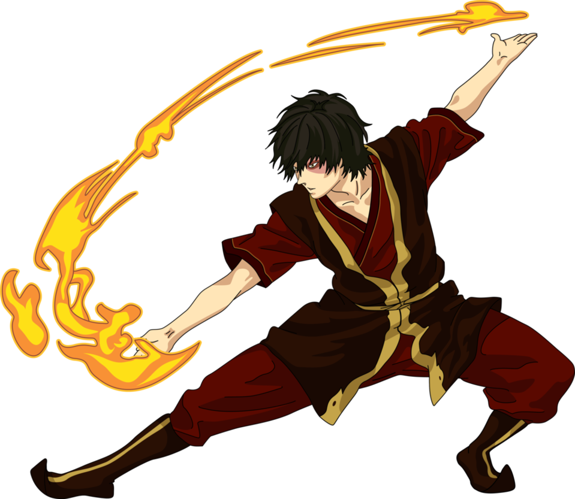

Zuko was born as a prince into the Fire Nation Royal Family. As a member of the fire nation and a firebending master, the Avatar is the essential enemy of Zuko. Zuko was banished from the fire nation after disrespecting his father. Then, after hearing that the avatar had returned, Zuko went on a mission with his uncle, Iroh, to find Aang in hopes his banishment would be lifted.